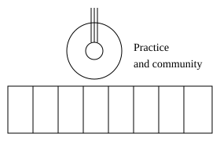

Beyond coding
Music and community

I enjoy guitar and keyboard, and I participate in the music team at Pathways Church. Music gives me a way to contribute to a community while continuing to learn.
A song I have wanted to learn on acoustic guitar is Floating by Cinek. Listening carefully and breaking a part into smaller pieces makes practice more manageable.
The illustration above is created for this portfolio; it is not a photograph of me or a recording of my performance.
Practice and growth
Learning an instrument reminds me that progress often comes from returning to a difficult section. I bring that mindset to programming: understand one part, practice it, and connect it to the larger task.
Consistency matters to me. I want my projects to show what I am learning and where I can improve.
Basketball and balance
I also enjoy basketball and working out. Having interests away from the computer helps me make time for movement and stay connected with other people.